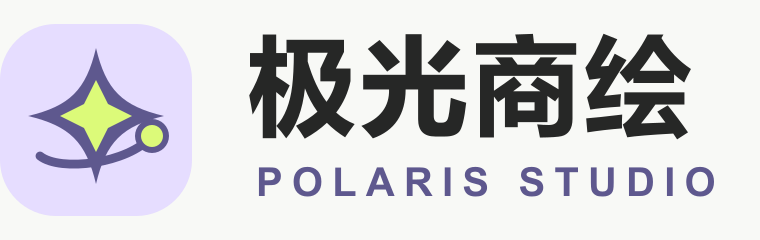
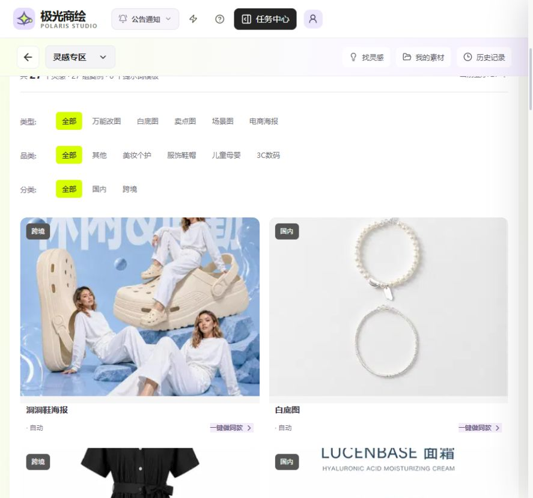
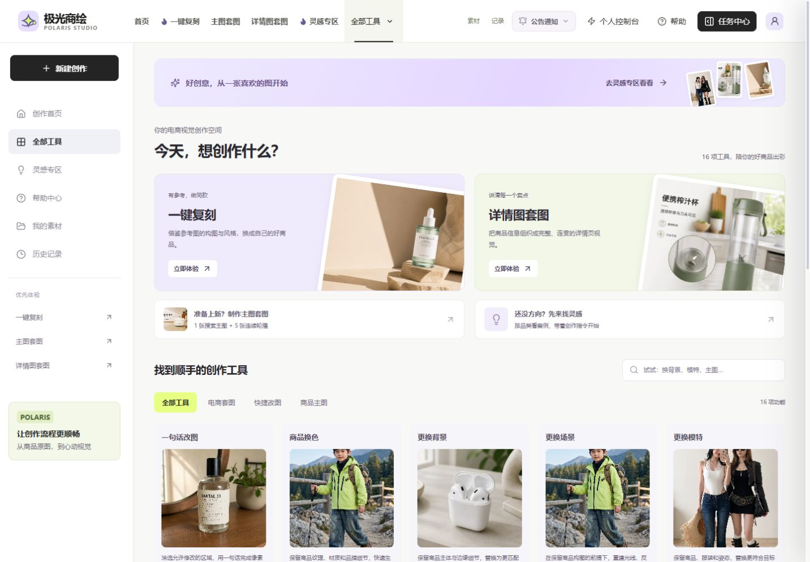

极光商绘前端迁移验收
参考交接包适配布局、动效和交互，保留极光业务接口、鉴权及任务链路，并采用淡紫、深紫和荧光绿主题的新北极星标志。结果保存在本地分支，未推送或操作线上服务。
首页阶段：2443fc0。工作台、交互和品牌阶段：1bd4364。打开真实本地灵感专区。
原站灵感已恢复
权威来源为极光现有原站的公开案例接口，并非新交接包或本地旧库。原站 27 个案例、64 个原图资产、65 处图片关联已同步到本地。标题、原始指令、分类、顺序、工作流及全部图片字节均完成比对。旧库多余案例已归档，原库与已有任务保留备份。同步未向原站发出写请求。
浏览器已验证原案例详情，以及“做同款”带入原图和原始指令，创作按钮可用；未发起付费生成。

验证结果
- TypeScript、相关 lint、最新生产构建通过；环境文件未修改。
- 207 项自动检查通过，0 项失败。
- 现有本地 API、数据库、任务队列和图片存储已恢复；旧后端镜像导致的复刻记录 404 已修复。运行依赖与原环境保持一致。
- 历史布局检查覆盖 1440 与 390 像素；动效、导航、上传和蒙版交互通过。1024/360 等额外检查未作为通过项。
- 独立生产浏览器测试此前遇到 Windows 临时文件锁 EBUSY，未作为通过项。
4173/8031 临时测试服务已关闭。3000 为用户要求保留的真实本地预览。付费出图、计费及线上账户登录未做新的完整实测。
界面与品牌

首页浮动、渐显、指针光效、滚动案例墙、滑杆与暂停控制已保留；以上历史工作台截图采用隔离测试服务，原站灵感截图采用真实本地 API。SVG 标志用于导航、页脚和站点图标。